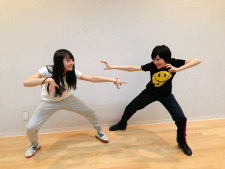
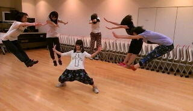

| 2013/04 12 Fri | やぁ、ご無沙汰だね。ヽ( ・∀・)ノ |
おばんです〜☆
いこまちゃんです〜ヽ(・∀・)ノ
プリンシパルのお稽古始まりました！
去年とは違う物になりそうです〜
今年は演技に対して沢山考えることが出来そうで嬉しい！
いこまちゃんは演技できないから、この舞台を通して少しでも出来るようにしたいです!!
台本もいこまちゃん好みですヽ(・∀・)ノ
そんなお稽古中のまりちゃん(まりっか)とのツーショット!!

なんだか二人とも楽しそうですね

そしてまいまいのブログでなぁちゃんがカメ○メ波をまいまいに向けてやっていたのが面白くて、いこまちゃんもみんなとやってみました！
全国の女子高生の気持ちがわかった！

どう？
ちなみに紫のTシャツに宇宙柄のズボンがいこまちゃんですヽ(・∀・)ノ
あとはねねころとまいまいとなぁちゃんとらりんと若月がいるよ〜ヽ(・∀・)ノ
あっ
次の個別男装する事にいたしましたので、よろしくお願いいたします!!

ではっ
へばなっ!!
コメント(507)
2013/04/12 21:42